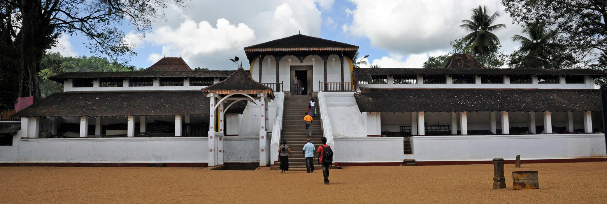

The historic shrine dedicated to God Saman, the deity of the sacred Adam's Peak mountain range.
The Maha Saman Devalaya in Ratnapura is one of the island's most significant religious and architectural landmarks. Built during the Dambadeniya period in the 13th century, this historic shrine is dedicated to God Saman, a benevolent local deity believed to be the protector of the Adam's Peak (Sri Pada) mountain range.
The devalaya is famous for its grand "Esala Perahera" (annual festival), which features traditional dances, elephants, and unique rituals that have been performed for centuries. The building itself is a beautiful example of late Kandyan architecture, featuring a massive three-story entrance "Gopuram" and intricate woodwork. Walking into the peaceful courtyard of the shrine, surrounded by the green hills of Sabaragamuwa, provides a profound sense of the island's deep spiritual roots.
Back to Ratnapura Hub